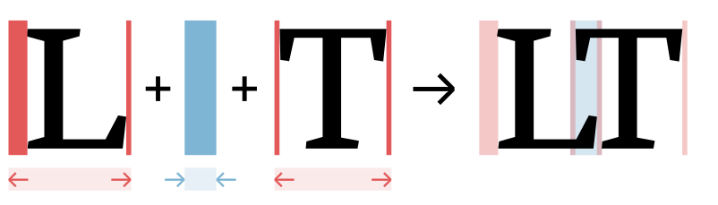

YinYangFit ☯
A model for automatic letterfitting, inspired by neuroscience

Acknowledgements
This research would not have been possible without funding from Google.
Abstract
Adjusting letter distances to be visually pleasing is a challenging and time-consuming task. As existing tools are too primitive to reliably handle the infinite variety of typefaces, designers have to mostly rely on their intuitive judgment. The model presented here is the first one developed from basic principles in vision science and has been successfully fitted to existing, hand-fitted fonts using backpropagation. It is a first step towards an explanation of why we perceive letter pairs as too close or too far, regardless of the font style or even script.
Epistemic status
This article is based on many months of reviewing the relevant scientific literature. However, I was not trained as a neuroscientist but as an engineer, and some of my hypotheses are true predictions, i.e. they lack experimental verification. Although results are promising, this should be seen as a roadmap for further research.
I have tried to avoid jargon wherever possible, with links for in-depth reading in the margin. Still, readers may find previous exposure to type design, computational neuroscience and machine learning helpful.
Introduction
What is letterfitting? Letterfitting refers to the process of adjusting the distances between pairs of letters Or more broadly, between pairs of glyphs of any kind. during typeface design. Red vertical bars show side bearings, blue vertical bar shows a negative kern. It’s often referred to as “spacing and kerning”, because pair distances are the sum of fixed amounts of space around every letter (so-called side bearings) and additional adjustment values for individual pairs (so-called kerns). Quality fonts often contain thousands of hand-kerned pairs that undergo weeks of testing and refinement.
Why do we fit letters at all? Some would say that well-fitted type is simply the result of the designer’s intuition for beauty. Others have tried to appeal to the aesthetics of an “even colour”, i.e. a printed page with a uniform texture and no noticeable blobs of black or white. Meanwhile, Frank Blokland has argued See his PhD thesis. that the distances between letter stems are mainly a holdover from the early days of printing, when the measurements of cast type were the result of practical considerations. None of these explanations have yet led to an automated letterfitting algorithm I’ve listed the most popular existing attempts in the appendix. that reliably reproduces the hand-tweaked pair distances in existing fonts of different styles, so we need a new approach.
My hypothesis is that all of the
This is by no means a revolutionary idea, Type legend Charles Bigelow recently compiled a comprehensive review of legibility studies, covering many important concepts including weight and optical sizing. yet for all the findings psychologists have made about legibility, we still have no explicit, unified model that would allow type designers to make use of them. Indeed, the disconnect between the two fields is quite surprising, because existing typefaces And I don’t mean the Sloan letters used by most experimental psychologists. contain so much implicit information about legibility that they should be a natural, cheap source of validation data for psychophysical theories. The goal of this project is to lay the groundwork for such models, starting with the relationship between pair distances and legibility.
Different perspectives
Letterfitting is an astonishingly difficult problem, and those who wish to tackle it require a deep understanding of many of the different aspects of vision and reading, including:
- Basic neurophysiology
- Organization of the primary visual cortex
- Divisive normalization mechanisms
- Recurrent feedback mechanisms from V2, V4 etc.
- Gestalt psychology
- Crowding
- Models of reading
- Type design (and not just in Latin)
- Information theory
In this article, I have tried to focus on the topics I believe are most novel to those with an engineering background (like myself) and most relevant to type designers.
Vision and reading: a high-level view
Legibility isn’t a matter of taste or opinion. Seeing a printed word triggers waves of electrical activity in our brain, which flash back and forth until both the visual image and the meaning of the word manifest in our conscious perception. This happens in more or less the same way for all of us, and even though scientists still lack the instruments to precisely measure the activity at a cell level, Although we have come a long way since Prof. Helmholtz’s Handbuch der physiologischen Optik from 1867 (worth a skim if you read German), most experiments still rely on microelectrode arrays which pick up very precise data, but only touch a few neighbouring neurons at a time; electro-encephalography which has very poor spatial resolution, and functional MRI which shows the whole brain but has poor spatial and temporal resolution. Optogenetic techniques are very promising, but not yet widely used. they now have a rough understanding of the computations performed. This makes it possible to recast typographic ideas about letterfitting in the language of psychophysics—but first we’ll have to review what is known about how our brain processes letters and words.
Reading, as a skill, relies on specialized letter-and-word-detecting circuitry in our brain, and this circuitry piggybacks on our generic image processing system. To explain reading, we need to explain both.
Newborns are not only extremely myopic and nearly colourblind, they also lack the fine-tuning of the visual cortex that would allow them to perceive objects clearly. The generic image processing system occupies a brain region called the visual cortex, located at the back of our head. Its layout is vaguely shaped by our mammalian genes, but its precise neural connections develop in response to the imagery presented to it over the first few months of our life, during which synapses that help provide useful information about our natural world are strengthened, while others wither away.
Some of the most interesting details in our environment are lines, edges, and colours. These basic features combine to form shapes, and shapes combine to form objects. Our visual cortex, having sculpted itself to make the best possible use of this natural hierarchy of information, is organized in the same way. Much of the research on perception is based on this idea of statistically ideal observers in the context of natural scenes. Luckily, type design doesn’t involve moving objects like natural scenes do. The first phalanx of about 140 million neurons to process input from the retina, collectively called V1, has a single task: to activate in response to small fragments of coloured lines and edges. Downstream, other neurons are connected to sets of V1 neurons that are aligned to correspond to continuous lines or corners. Further downstream, those neurons combine with others to activate neurons responding to particular shapes, which combine to detect objects.
Once the visual cortex has thus extracted some noteworthy intel about the incoming imagery—vitally, the shape and location of objects—the next step involves the actual recognition and comprehension of said objects. For letters this happens in the so-called visual word form area on the underside of the left half of the brain, which is in turn connected to the language-recognition networks in Wernicke’s area and other places.This big-picture theory was perhaps most clearly articulated in this 2003 article, which continues to set the research agenda.
Letters, words, and uncertainty
It is deceptively easy to think of this process as data smoothly flowing upwards through ever-higher-level brain regions, as if the brain were an assembly line leading from our sensory organs to a place called consciousness. In reality, the process is fiercely antagonistic.This interactive visualization is far from realistic but a much more useful visual metaphor than feed-forward deep learning architectures. The higher-level brain regions are already happily abuzz with activity representing their own understanding of the world, activity which bounces around in stable patterns and which even feeds back into the lower-level regions to reinforce itself. Only strong, sustained sensory evidence for new information is enough to disrupt and update the patterns. This is a slapdash framing of set as Bayesian inference via top-down modulation: the original state of the higher-level area corresponds to a statistical prior and the updated state to a posterior. This is a deep and fascinating area of research of itself, and this article is only meant to convey an intuition, not a rigorous description of reality.
A neat, letterfitting-related example of these mechanics is the following paradox, which vision researchers have probed in endless studies: on one hand, we can raed wrods even when their letrtes are out of odrer, indicating that the brain ignores most information about letter positions. Jumbled letters are a crowd favourite ever since the infamous Cambridge email meme. The strength of the effect appears to depend on many factors: the relative position of the letter, the jumbling distance, the language, and even on your age (curiously, it does depend on whether you are a human or a baboon). On the other hand, we have no trouble distinguishing anagrams like cat and act. Nobody has yet observed the responsible neurons in action, but the mountains of experimental data tell a story that goes like this:
The word cat appears in the center of vision, triggering a cascade of electrical pulses in the visual cortex. Vertical, horizontal, and angled features are detected in various places, and they combine to activate neurons that code for the presence of letters. In early models of reading, researchers thought of these letter-detecting neurons as assigned to fixed positions, representing data like “c” in position 1, “a” in position 2, and so forth—but that’s not realistic. Instead, there are probably multiple detectors activating for each letter, and because of the spatial uncertainty introduced by multiple levels of feature detection, all they can do is collectively express a probability distributions in space:This is the overlap model by Gomez, Ratcliff, and Perea.

The probabilistic nature of this architecture, which is illustrated in the diagram by circles representing stronger and weaker activations, naturally extends to neurons which detect the presence of ordered combinations of letters.The concept of such combination-detecting neurons originated with the open bigram model championed by researchers Carol Whitney and Jonathan Graigner. Soon, biologically plausible models were proposed (I particularly like this paper by Dehaene et al. for its lucid explanations), followed by fMRI evidence. Although the diagram above shows only two types of detectors—letters and bigrams—the brain likely contains a whole interconnected hierarchy of them, detecting letters, bigrams, trigrams, quadrigrams, and larger morphemes, all of which contribute to the detection of the word.It is not clear whether detectors correspond to single neurons (sparse coding) or constellations of neurons (population coding), especially at the level of quadrigram or morpheme detectors. All of the above likely use overlapping, Gaussian-weighted receptive fields.
Which word we finally perceive is not up to the letter-combination detectors, however. Instead, that’s a decision for the rather more dignified brain areas that deal with language processing—and they are free to disagree with the visual system. To illustrate, let’s consider a situation where cat was, in fact, a typo for act.
Imagine, for instance, that we have just read the words “police caught the bank robber in the”. Although we have not yet seen the next word (cat), our language networks are already sizzling with electrical activity that renders the neurons for act especially sensitive. Shortly after, some signals arrive: strong signals for CA and AT, moderate signals for AC and OA, and some weak signals for CT, as shown in the diagram above. However, despite their strong activation, the neurons for CA and AT find it difficult to activate any word-coding neurons. Sure, cat fires some spikes, but without the support of the rest of the language network, it’s a rather hesitant activation. Meanwhile, even the comparatively small contributions of AC and CT (and AT, which is also weakly connected to act) are enough to give the primed act a serious boost. This seals the deal, because act has neural connections going backwards to AC and CT, creating a self-amplifying feedback loop that has act glowing red-hot (metaphorically) within just tens of milliseconds, far outdoing any notion of cat. This is a tremendous oversimplification. The neural deliberations involved in word individuation depend on first and last letters, syllable structure, position of vowels and consonants, and other factors that are still the subject of painstaking research. In addition, detectors likely have inhibitive connections that implement direct competition between them, so as time passes, act might actively suppress cat, or the two may oscillate back and forth, depending on the circumstances. No diagram can do these complicated two-way dynamics justice, of course, but we might visualize the effect of the initial top-down feedback like so:

This process of “word individuation” takes about quarter of a second; meanwhile, the eyes have long moved on to the next sentence. There are several EEG studies on this subject, but this one is especially cool as it involves deep-brain stimulation of live human volunteers. A quick reader might therefore never notice the typo at all. Of course, this mechanism is even more effective for jmbueld letrtes, because letrtes isn’t a word at all—there are no neurons or synapses coding for it in our language system, so the next-best word will always win by default. That’s true even though the initial mismatch may be enough to draw your conscious attention, which unpleasantly interrupts the flow of reading. It’s not clear how that works, although the predictive coding theories of the brain, promoted heavily by researchers like Karl Friston and Andy Clark, provide some promising ideas. This article by Jacob Hohwy contains many of the relevant references.
Given this model, we can make the following hypothesis about letterfitting: excessively small or large pair distances result in poor activation of letter detectors and/or letter-combination detectors. Due to this poor activation, the activity in the visual word form area takes longer until it settles into the stable pattern corresponding to the perception of the word. On aggregate, this has the effect of slowing down reading.
I grant that this remains a hypothesis until electrocorticographical evidence shows an effect of letterfit on the temporal dynamics of word individuation. The idea seems plausible, however, and raises the question: how exactly does a poor fit lead to poor activation of detectors?
One could speculate that the most effective way to activate a particular letter detector is to present only the corresponding letter, in the fovea and on an otherwise blank page—in other words, at a pair distance of infinity, or at least exceeding the field of vision. Contrarily, it is clear that touching or even overlapping letters are difficult to recognize.
[image]
This would suggest that more loosely fitted words are easier to recognize, and indeed, research confirms just that. See e.g. these experiments by Gomez and Perea. Buy sadly there’s no free lunch for typographers, either. When text is tracked out, less of it fits into the field of sharp vision (the “visual span”, as Gordon Legge calls it), so it takes extra saccades to process the whole text (see e.g. Legge et al.’s visual span experiments). All in all, it’s a wash in terms of reading speed. The only ones who consistently benefit from a looser fit are dyslexics, as reported by Marco Zorzi et al., which suggests that dyslexia is related to a deficit in letter-position coding. This brings into focus a key question that any reliable letterfitting model must answer: how exactly does the tightening of pairs reduce the activation of letter detectors? We’ll later construct a simple but effective model to address this question.
In addition, we should note that in tight pairs, the problem of diminished letter detector activation is actually compounded by the increased activation of the reverse-order bigram detector, which likely directly competes with the desired bigram detector:
[image]
Although the severity of this problem likely pales in comparison to the weakening of the letters themselves, and its practical effect on word individuation speed depends on too many factors (width and shape of the letters, orthographic frequency of the reverse-order pair, etc.) to model it effectively, it is nevertheless part of a complete account.
At excessively large distances, the (perfectly) activated letter detectors are too far apart in space in order to jointly activate the letter-combination detector, due to the limited size of the receptive field of the latter. In fact, this experiment by Fabien Vinckier et al. showed precisely that once more than two spaces are inserted between letters, reading speed drops off a cliff, which aligns well with the proposed receptive field size of bigram detectors.
[image]
This alone should incentivize us to limit pair distances to hit the sweet spot of the letter-combination detectors. However, there may be another reason to do so: a large gap between letters suggests the presence of a word break, which allows for the detection of two individual fragments which will compete with the actual word at the word detector level.
Curiously, word breaks have been all but ignored in the psychophysical literature until now. At first blush, it seems that the limited size of combination-detector receptive fields, combined with competitive cross-inhibition between word detectors, should be a sufficient explanation for word breaks: a loose pair in the middle produces a weak bigram activation, which in turn weakens the support for the whole word, in favour of the detection of two individual fragments. This suggests that the relative activation of combination detectors is most important, which agrees with the top-down feedback model of word indviduation as well as with the observation that no apparent word breaks are introduced if well-fitted text is tracked-out evenly. Still, it is perhaps not the whole story, as second-order contrast normalization, gestalt grouping, and other feedback-based mechanisms—all of which occur much earlier during visual processing—may contribute to the perception of word edges. The existence of these kinds of saliency-enhancing computations in the visual cortex is certain, but the exact influence on higher-level processes like word individuation is not. Nevertheless, Simon Fischer-Baum and colleagues have found that the position of word edges does indeed have particular relevance during reading, as suggested by priming experiments and brain injury patients. I will address those below.
The direct effect of pair distances on the primary visual cortex
The line- and edge-detecting neurons in V1 receive input directly from the

These neurons are called simple cells, and we can easily predict their response to a given input. For instance, when we see an single uppercase I on a page, some simple cells will respond strongly and others not at all, depending on the tuning and location of their receptive fields: This was first discovered by David Hubel and Torsten Wiesel in the 1950s, by showing patterns of light to a cat after sticking electrodes in its brain (video of said cat). The researchers went on to win a Nobel Prize for their experiments.

It is these signals—the image decomposed into fragments of lines and edges of various sizes and orientations—that provide the input for further visual processing and, ultimately, the letter detectors.
As it turns out, some V1 neurons are less sensitive to phase than others, and some may even respond equally to both lines and edges, as long as scale and orientation match their tuning. Those cells are called complex cells, and how they interact with simple cells is still unclear, Simple and complex cells lie along a spectrum of phase specificity, which is brilliantly explained by this recent paper by Korean researchers Gwangsu Kim, Jaeson Jang and Se-Bum Paik. But it seems that there’s even more to the story, as complex cells seem to change their simpleness index in response to their input as well. although thanks to their phase invariance, they have traditionally been modelled as summing the activations of nearby quadrature-phase quadruplets of simple cells. ENERGY.
In the context of letterfitting (and perception research in general), the existence of complex cells is convenient because invariance to phase implies invariance to contrast inversion, and of course our letterfitting algorithm needs to work equally well for white-on-black text as for black-on-white. This does not mean that complex cells are necessarily contributors to the signals that finally activate the letter detectors, but they are a useful computational tool here as they allow us to collapse four rectified quadrature-phase signals into just one.In practice, dark text on light backgrounds lead to measurably better reading performance. Not only do light backgrounds make the pupil contract, creating a sharper image, but V1 outputs are also stronger for dark features, so it seems doubtful that complex cells truly have a leading role in letter recognition. Taking all orientations into account, the map of complex cells responses for the uppercase I looks like this:

Next, consider what happens to the activations of simple and complex cells when a second letter is added. Shown here, for instance, are the activations of some complex cells to the left and right side of a lowercase n. (The fixed-phase receptive fields are shown only to illustrate the peak-response phase angle at the given location).
The V1 response to the standalone letter includes cells whose receptive fields cover, in part, the space to the right of the letter. That space is half of what makes up the right edge of the letter. Adding a neighbouring letter on the right partly fills this space, reducing the activation of said cells. In other words: adding the neighbour directly takes away from the signal available to stimulate higher cortical areas, i.e. the letter detectors.
This interaction goes both ways: it happens simultaneously for both involved letters, and it is a direct result of the nonlinearity of complex cells, which squash phases into local magnitude values. In particular, the activation near the inner edges of the letter pair is reduced.From the perspective of the complex wavelet decomposition performed by the simple cells, this corresponds to local destructive interference between the out-of-phase signals for each frequency band. The frequency-domain view is natural in the context of the DFT-based software implementation of this model, but signal processing theory is beyond the scope of this article. Note also that this is distinct from the lateral masking effect commonly attributed to lateral inhibitive connections in the early visual cortex. Somewhat surprisingly, the only author known to me who has published on interference at the stimulus level is researcher Bernt Christian Skottun, who has (as of early 2020) not garnered any citations on his papers.
Of course, this interference is only a concern for cells with receptive fields affected by both letters. Receptive fields that are smaller than the gap itself are not affected:
[image]
In other words, signals representing smaller frequency scales are only affected when letters are very close together, while large scales see a a reduction at larger distances too:
[image]
Research has shown that humans rely mostly on the mid-size scales for letter recognition.This is widely recognized, but perhaps most clearly described in this article by Oruç and Landy and this article by Legge and Bigelow. Extra-fine details like serifs are relatively unimportant. We can therefore assume that loss in mid-size signals is most detrimental to the letter detectors:
[image]
Of course, the meaning of “mid-size” is relative to the font size, tying in the idea of optical sizing: At larger font sizes, smaller details shift into the mid-size range of spatial frequencies and dominate letterfitting decisions, whereas at very small sizes, it is entire letters that dominate. We could think of three broad regimes: serif-serif interference, stem-stem interference, and letter-letter interference.
How exactly does the energy loss in certain locations, orientations and scales affect the activation strength of the letter detectors? This is a difficult question to answer, because we have no precise knowledge of all of the neural computations performed between the retina and the visual word form area. However, we can make some educated guesses, and build models of varying complexity.
One such model could be:
- Weight all energy losses by orientation and scale, and apply an exponentiation to account for the possibility that some losses compound nonlinearly.
- Sum all losses to yield a total loss.
- The total loss is assumed to nonlinearly predict the reduction in letter detector strength, with a nonlinearity of arbitrary complexity and letter-dependent parameters.
This can yield surprisingly good results. It is even better, however, to attempt to model the response of letter detectors more directly. Although we lack a full model of the visual cortex, we must assume that letter detectors are incentivized to distinguish letters in a statistically optimal
[image]
We can estimate what each letter detector looks for by simply training a classifier against the letter shapes of the font we wish to fit:
[image]
This allows us to directly observe the effect of placing two letters directly next to one another:
[image]
Predicting the response of combination detectors
Use an ideal observer model to build a model of bigram detector kernels
Problem: ii, mm, and ll all have the same distance. How can it be that
Reduction in ii actually makes it go away. Whereas reduction in mm creates competition from other letter detectors.
This points towards a different mechanism of action. If we let mm get closer together,
Modelling interactions in the early visual cortex
- Divisive second-order contrast normalization
- Gestalt grouping via B/G cells
- Contour integration via V4 feedback
- Anisotropic surround integration
Word breaks: are bigram kernels the whole story?
- Unfortunately, there is no solid research on how our brains deal with word breaks at all. Although separating words with spaces is not universal, Historically, non-space word dividers symbols were common. Today, Thai and Burmese still use no word dividers, Vietnamese divides syllables instead of words, and Koreans frequently omit spaces in Hangul in informal writing. Then again, those are isolating languages in which virtually every syllable maps directly onto a free morpheme, so spaces would not be of much help anyway. In more fusional languages like English, there is no doubt that spaces help us process which morphemes belong together. Of course, removingspacesslowsusdown, but what’s more telling is that add ing spa ces at syl labic breaks is less confusing than a ddi ng t hem ra ndo ml y. On a related note, there is some fascinating research on how our brains break down words into morpho-orthographic chunks during processing.
Results
(Come back soon!)
Parameter tuning
(Come back soon!)
YinYangFit, the tool
(Come back soon!)
Appendix: Existing letterfitting tools
Most existing approaches operate either on the distance between stems, or on the area of the gap between them. Some are hybrids, more complex, or unpublished; finally, there has been some experimental work using neural nets:

Fixed-distance methods: A family of approaches that insert pre-defined distances between letter pairs. In their simplest incarnation, these heuristics are equivalent to simply adding sidebearings to every letter, without any kerns. Kernagic, inspired by Frank Blokland’s research, uses heuristics to identify stems or stem-equivalents (such as the round sides of an o) in every letter shape, and then aligns them. This works reasonably well with very regular type (think blackletter), but manual adjustments are usually required. Less well known is Barry Schwartz’ anchor point implementation of what amounts to basically the same idea. Adrian Frutiger, Walter Tracy and Miguel Sousa have devised similar systems, described in Fernando Mello’s MATD thesis. The legendary Hz-Program is also included in this category, as its patent application reveals that letter pair distances were simply stored in a hardcoded table.
Gap area quadrature: A family of algorithms that attempt to quantify and equalize the perceived area of the inter-letter gap. The crux, of course, lies in deciding where the gap ends. HT Letterspacer, the crudest one of these tools, considers everything between baseline and x-height (modulo some minor refinements). Simon Cozens’ CounterSpace uses blurs and convex hulls to more effectively exclude regions that arguably don’t belong to the gap (such as the counter of c). My own Electric Bubble model measures Euclidean instead of horizontal distances, but imposes geometric constraints that produce similar results to CounterSpace. CounterSpace currently wins in terms of performance-complexity ratio but it, too, struggles to fit certain letter pairs.
Other shape-based methods: These include more exotic approaches, such as stonecarver David Kindersley’s “wedge method” from the 1960s, which operated on letter area moments of inertia (and didn’t really work), and iKern, which produces great results but, just like Adobe’s Optical Kerning feature, remains unpublished. Last but not least, the TypeFacet Autokern tool identifies parts of letter outlines that jut out horizontally, and adds kerning to compensate, based on a few parameters.
Neural nets: Yes, we can train convolutional nets to recognize images of well-fitted and poorly-fitted type. Simon Cozens has built several versions of his kerncritic model (formerly AtoKern), and the recent ones perform surprisingly well on many (if not all) pairs. While neural nets are fascinating, they tend to be black boxes: we can only make guesses at how they work, and we cannot tune their behaviour to suit our taste. This problem holds not just for convolutional nets, but for statistical function approximators in general; I will not discuss them further in this post.
Honorable mention: Bubble Kerning is a proposal that type designers draw a bubble around every letter, such that software can automatically find pair distances by simply abutting the bubbles. While this isn’t technically a letterfitting heuristic at all, it’s still worth mentioning as a neat idea that could perhaps save designers some time. Toshi Omagari has built a Glyphs plugin.